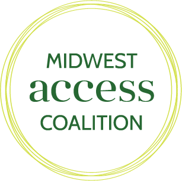
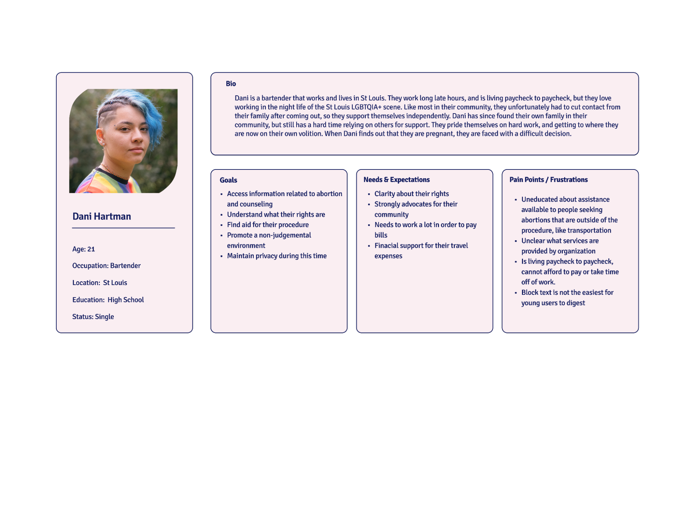
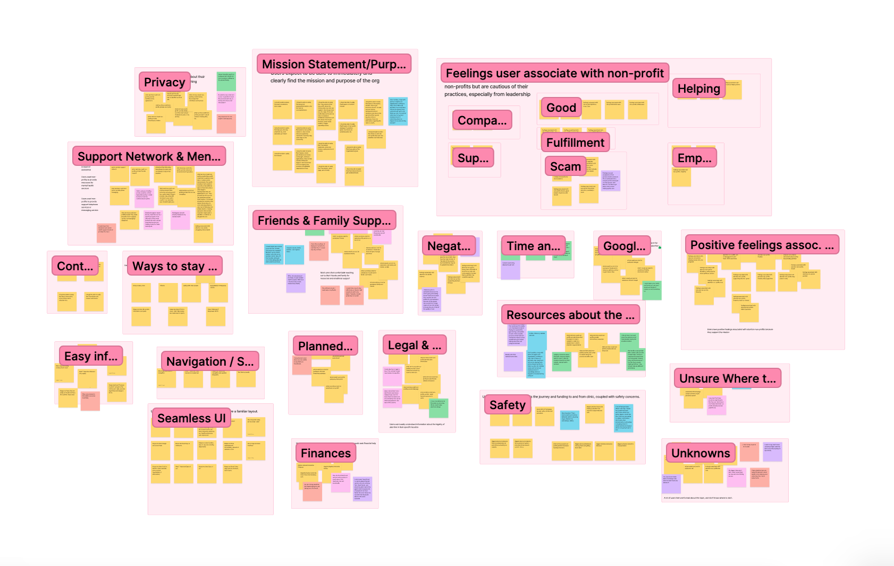
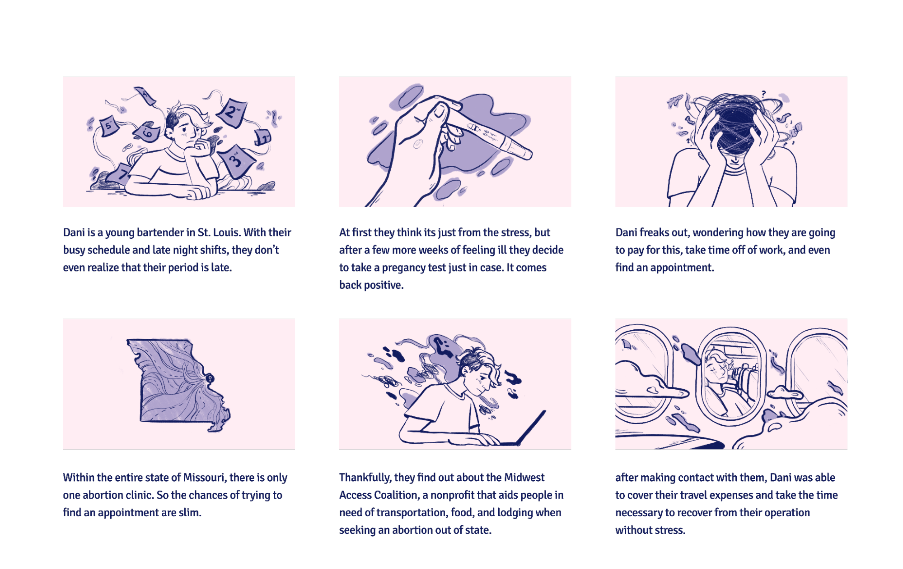
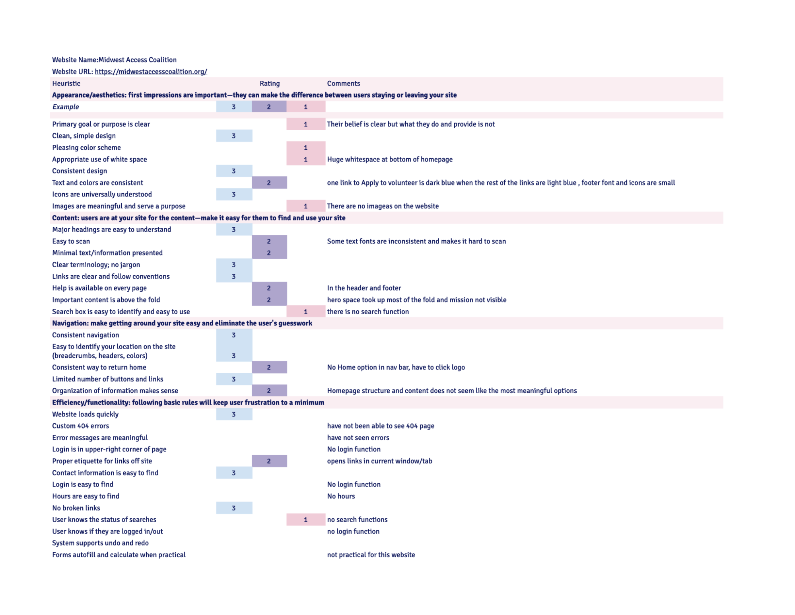
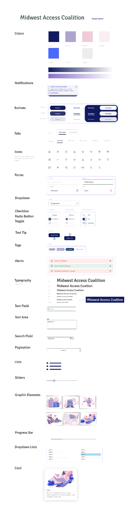

UX/UI Designer
Midwest Access Coalition
Website Redesign
The Midwest Access Coalition website is not
suitable for users to navigate easily.
Our aim was to design a
user-friendly interface with clear
navigation, and good design
heuristics.
My Role:
Tools:
Figma, Google Suite, Adobe Photoshop, Adobe Illustrator
The Challenge:
Through user obervation, we found that the current website is not meeting the needs of users as they failed to understand the purpose of the website and locate the resources provided. This causes users to leave the site as they cannot find the aid they need, or see the transparency of their services and where funding goes.
How might we improve this site so that users can easily access the resources they are seeking, can recognize the mission of the non profit, as well as provide seamless UI that can streamline the use of this website?
The Solution:
Our aim was to design a user-friendly interface with clear navigation, and good design heuristics so that users may find necessary resources and important information regarding abortion access in the Midwest.
The Midwest Access Coalition is based in Illinois, which is completely surrounded by states that have restricted access to safe abortion procedures and healthcare. We want to redesign this website to ensure that these specific resources are easily accessible and understandable to people who need them.

The Approach
Our team approached the Midwest Access Coalition website redesign
by analyzing it’s heuristic design elements, we
conducted user tests and interviews, then
prototyped, tested and iterated on our design.

User Research
Heuristic analysis, user persona, user motivation, competitor analysis, storyboard
PrototypingCard sorting, user flow, wireframes, prototypes, prototype testing, style guide, user testing
Wireframes & TestingIteration of mobile and web prototypes, v2 prototype testing
ConclusionsNext Steps and final thoughts

User Research
Heuristic Analysis
Our first task was to identify possible paint points that users experienced on the Midwest Access Coalition Website. We identified our user persona and their motivation for visiting the site. Ultimately, our goal is to help users such as Dani to find resources that advocate for reproductive rights.
User-centered Analysis
We found that the original aesthetic of the page is bland and often has too much text on a single page. The navigation from page to page is confusing as some key elements are either unclear or not working. Sympathy, personal connections, and goals of NPOs determine if users want to make donations or support the organization by volunteering. Donation is one of the most important function in an NPO’s webpage.
Storyboard
Designing a scenario for our user was important in identifying a possible solution to the pain points our interview subjects faced when testing.
Competitor Analysis
Researching other websites that offered a similar solution helped us identify strengths, weaknesses and features we felt would allow us to design a user-friendly and informative website. We found that sites either had an overabundance of information or simply lacked information and had a lot of blank space throughout. We also found that impactfcul imagery creaated a more empathetic tone, something we sought on our own design.

Prototyping
Website Heuristics
Our goals were to simplify the navigation and consolidate to reduce redundant links that caused confusion or simply don’t work. Next, we wanted to highlight Contact Us & How It Works pages.
Style Guide
Wireframes & Testing

User Testing
It wes vital that we did user testing to identify where we lacked in our initial wireframe prototypes so that we may improve our design.


Final Product
Final Thoughts
Researching other websites that offered a similar solution helped us identify strengths, weaknesses and features we felt would allow us to design a user-friendly and informative website.
We found that sites either had an overabundance of information or simply lacked information and had a lot of blank space throughout. We also found that impactfcul imagery creaated a more empathetic tone, something we sought on our own design.
Next Steps: Chat message feature on website-links to support groups and professionals who can chat in real time Investing more time into privacy features Adding legal resources for the area
Lets connect!